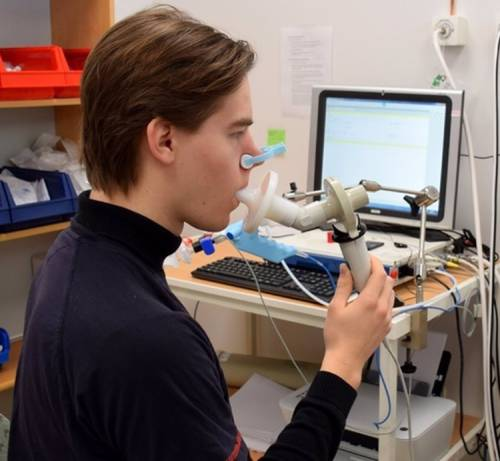
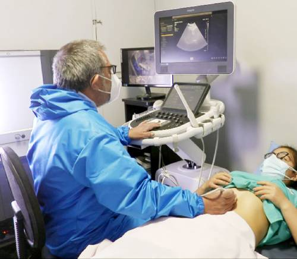
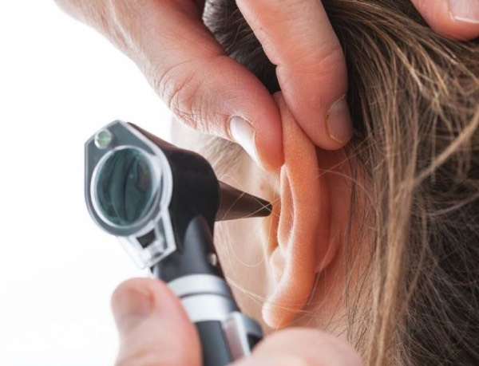
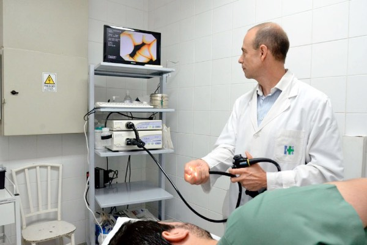

Especialidades médicas
Contamos con 14 especialidades médicas, con un total de 22 profesionales de amplísima trayectoria y experiencia en el campo de la salud.
| Especialidad | Profesional |
| Clínica Médica | Dr. Horacio Vorraso |
| Clínica Médica | Dr. Oscar Alvarez |
| Clínica Médica | Dra. Claudia Hardziej |
| Cardiología | Dra. Ivana Muratore |
| Cirugía de Cabeza y Cuello | Dr. Ariel Gawuryn |
| Cirugía de Tórax | Dr. Martín Aguel |
| Endocrinología | Dra. Cintia Palmero |
| Endocrinología | Dra. Ana Aiello |
| Neurocirugía | Dra. Claudia Moreno |
| Neurocirugía | Dr. Fabricio Medina |
| Neumonología | Dra. Sonia Minardi |
| Especialidad | Profesional |
| Odontología | Dr. Roberto Bernal |
| Otorrinolaringología | Dra. Ines Bauman |
| Otorrinolaringología | Dra. Gisela Eldahuk |
| Otorrinolaringología | Dr. Jeison Pinilla |
| Rehabilitación respiratoria | Lic. Néstor Vicente |
| Fonoaudiología | Lic. Sofía Suarez |
| Nutrición | Lic. Carlina Casalini |
| Nutrición | Lic. María B. Ortega |
| Psiquiatría | Dr. Alejo Fowler |
| Psicología | Lic. Silvia Castex Pla |
| Psicología | Lic. Silvina Capua |
Estudios diagnósticos disponibles
Cardiología
Electrocardiograma
Holter de arritmias
Holter de presión
Ergometría
Ecocardiograma doppler
Ecodoppler de vasos de cuello
Neurología
Electroencefalograma (EEG)
Potenciales evocados
Electromiograma (EMG)
Polisomnografía (PSG)
Videonistagmografía

Neumonología
Espirometría
DLCO
Test de caminata
Evaluación post-COVID

Urología
Cistoscopía
Urodinamia
Ecografía prostática
Ecografía renal y vesical

Otorrinolaringología
Otoscopía
Potenciales auditivos
Laringoscopía
Rinoscopía

Gastroenterología
Endoscopía digestiva alta y baja
pHmetría de 24 horas
Test de hidrógeno en aire espirado
Manometría esofágica
Ecografía abdominal
Fibroscan hepático